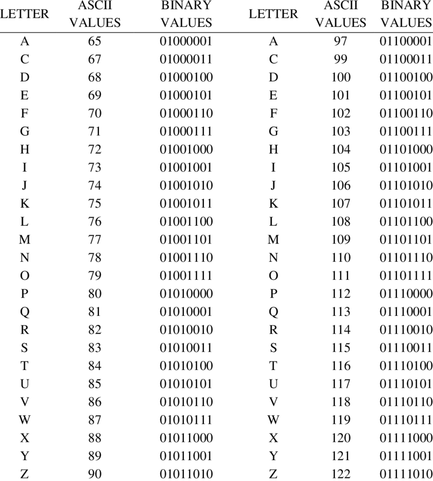

Het binairstelsel is een manier om getallen te schrijven, maar dan alleen met 0 en 1. Dit is dus anders dan het getallenstelsel dat wij normaal gebruiken.
In het binairstelsel tellen de 0 en 1 op een speciale manier.
Net zoals je in on getallenstelsel de getallen groter maakt door ze op verschillende plekken te zetten, werkt dat ook zo in het binairstelsel.
Alleen dan met getallen die steeds verdubbelen, zoals 1, 2, 3, 4, 8 enz.
Het binairegetal 111 betekent bijvoorbeeld:
- De rechter 1 is 1
- De middelste 1 is 2
- De linker 1 is 4
Dus betekent dit bij elkaar 4+2+1=7
Een bit is de kleinste eenheid van informatie in een computer. Het is één enkel getal dat ofwel 0 of 1 kan zijn. Je kunt een bit zien als een schakelaar die uit is(0) of aan is(1)
Een byte bestaat uit 8 bits. Dus een byte is een groepje van 8 getallen, die allemaal 0 of 1 kunnen zijn.
Bijvoorbeeld:
- 10101010 is een byte.
- 00001111 is ook een byte.
Omdat een byte uit 8 bits bestaat, kan het 256 verschillende combinaties van 0'en 1'en hebben.
Dit betekent dat een byte gebruikt kan worden om bijvoorbeeld één karakter in tekst weer te geven, zoals een letter, een cijfer of een symbool.
Computers slaan alle soorten informatie op door deze op te splitsen in stukjes bits en bytes. Elke 1 of 0 is een bit, door deze te combineren kunnen grotere hoeveelheden informatie worden opgeslagen.
- 1 byte kan bijvoorbeeld 1 letter opslaan.
- 1024 bytes vormen 1 kilobyte, deze maat wordt gebruikt voor bestanden.
- 1024 kilobytes is 1 megabyte, deze maat wordt weer gebruikt voor een grotere hoeveelheid data, zoals liedjes en foto's.
Dit is een ASCII-tabel.
ASCII-tabelen worden gebruikt om van de getallen een taal te maken.
